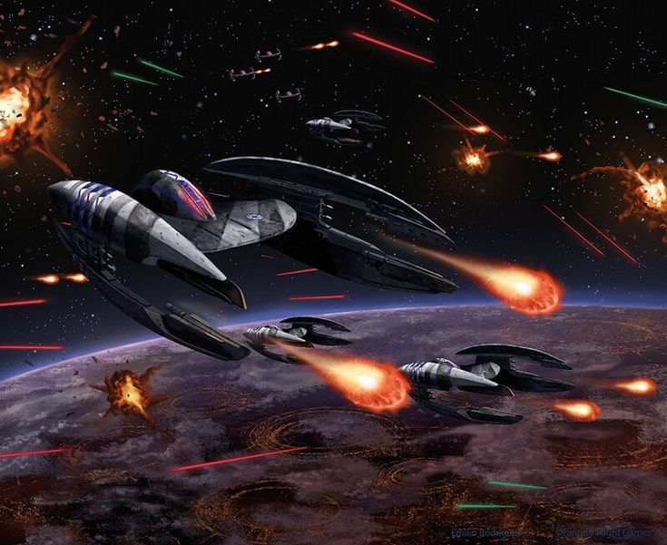

Commander The Seven factions that are acquirable in Star Wars X-wing are The Rebellion, The Galactic Empire, Scum and Villainy, The Galactic Republic, The Separatists, The Resistance, and the First Order. You will be able to battle across the ages in fast-paced, intense dogfighting arenas. The first player to defeat all enemy ships and take control of the area will be the victor. On this website, we have a page dedicated to Each faction and their load outs, an easy explanation of rules, and a page dedicated to known strategies. Please note that Due to the many varying rules and technicalities, you will want to refer to Atomic Mass Games but for basic gameplay we got you covered.

After the take over of Emperor Palpatine, thousands of star systems became at risk of tyranical and facist rulers. In hope of democracy and a future peaceful universe rebel cells began to popout in resistance to the new order. Overtime the numbers grow as a rising threat to the Galatic Empire. Will you support there noble cause and liberate the galxy from tyrany?
After years of war during the Clone Wars Emperor Palpatine desires to secure his new Empire to bring peace prosperity and order to his new Empire. With a newly unleashed army with provisons and nearly unlimited resources the EMprie quicklty siezes most of the galaxy at large even takeing a foothold in the outer rim territories. Will you join the forces of the Empire and bring peace to this war torn galaxy?

Bounty hunters and war lords around the Galaxy have always been terriorizeded and pirated the weak. Although some guns for higher do there best to stick out for the little guy. At the end of the day it's about getting the money no matter the job. For a skilled bounty hunter, war lord, or prirate no job is to difficult for the right price. Will you join this brand of brigands and seek the riches of the Galaxy?


For thousands of Years this civilation of democracy has stood of peace, life, and prosperity for all. After a battle on genosuics The Seperatist Alliance lauchned a masive attack on the jedi order of peace keepers. In order to maintain security and control over the galaxy The chancellor is given emergency powers to construct and imbolize the Grand Army of the Republic to defeat the Seperatist insurgents. Will you join the brothers in arms and the jedi in bringing peace to the galaxy?
After years of Corruption the GFalatic Republic has failed the systems of the galaxy. Eager to seeced from the union and join a cause for honesty Sentors around the planet join toghether to Form the Confederacy of UNited Systems. However, There political leader Count Dooku uses his New driod army to reign woth terror over the systems of the galaxy. Will you help the Count take control of the galxy and make way for an new empire?
After years of Peace with the New republic the time comes agian for heros around the galaxy to step up and battle the forces of Evil. Resitance fighters devasted after the destruction of the republic fight to survicve the increaseing attacks and threats of the rising First Order. Will you suport the cause of life and freedom? Will you be the spark that lights the fire that burns the first order down?
After years of peace Kylo Ren is sought out by an unknown evil who seeks to take control of the galaxy and finish what the Galatic Empire failed to do. Using Fear and demeonstrating milirtay superiortiy the First Order quickly destroys the planets that hold the galaxy together. The Whole galaxy fears as this new galaxy order take over every system of the galaxy. Despite all the efforrts, resources, and shear power there are those that would apoose the greatest militarian government ever constructed. Will you lead the first order to victory and snuff out the resistance?